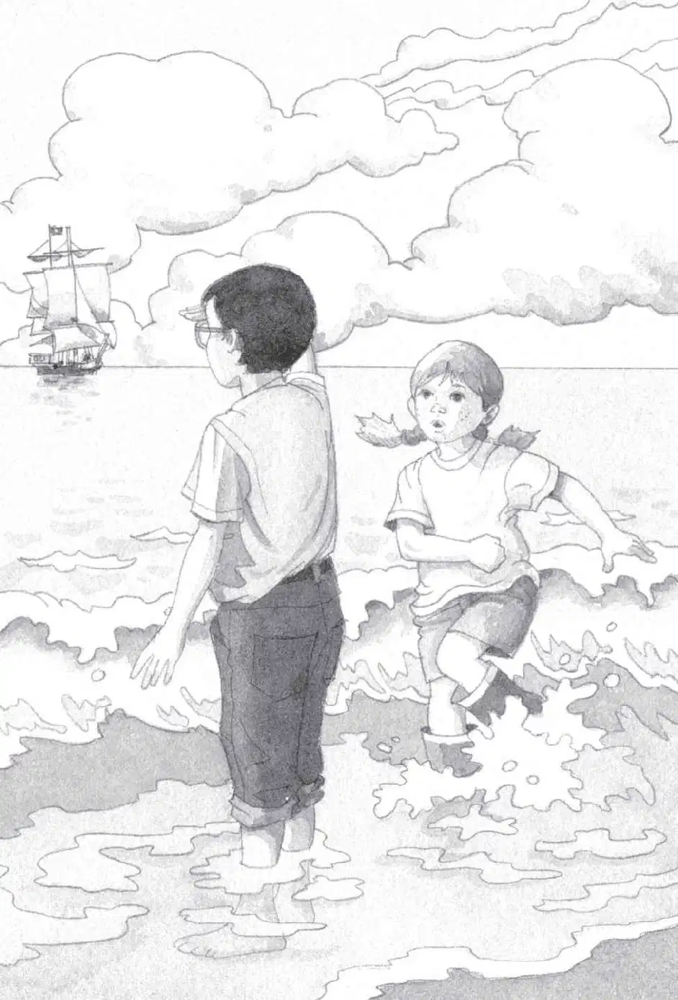

Jack felt hot sunlight streaming into the tree house.
He smelled saltwater.
He heard the sound of waves.
He and Annie looked out the window.
The tree house was in a palm tree. Beyond was a bright blue sea. A tall sailing ship was on the horizon. It was just like the picture in the book.
“Too late!” squawked Polly.
“Look!” said Annie.
Polly was flying in circles above the tree house. Then she swooped down to the ocean.
“Come on, let’s follow her! Let’s go in the water!” said Annie. She took off her raincoat and dropped it on the floor.
“Wait, we have to study the book first,” said Jack. He started to reach for the book. But Annie grabbed it.
“You can read it on the beach,” she said. Without even looking at the cover, she shoved the book into Jack’s backpack.
He sighed. Actually, the water did look wonderful.
“Okay,” Jack said. He took off his raincoat, too.
“Come on!” Annie handed Jack his backpack, then started down the ladder.
Jack folded the raincoat and put it next to the stack of books. He put on his backpack. Then he went down the ladder.
As soon as Annie hit the sand, she ran toward the ocean. Jack watched her wade into the water. She was still wearing her rain boots.
“Your boots, Annie,” called Jack.
She shrugged. “They’ll dry out,” she said.
Jack took off his boots and socks. He put them beside his pack. Then he rolled up his jeans. And ran across the hot sand into the waves.
The water was warm and clear. Jack could see shells and tiny fishes.
He shielded his eyes against the sun. And peered out at the sea.
The tall sailing ship seemed a bit closer.
“Where’s Polly?” said Annie.
Jack glanced around. No sign of Polly. Not in the palm trees. Not on the sunlit sand. Not over the bright blue sea.

When Jack looked out at the sea again, the ship seemed even closer. Now Jack could see its flag.
As he stared at the ship’s flag, a chill went through him.
The flag was black. With a skull and crossbones.
“Oh man,” he breathed. He started out of the water.
“What’s wrong?” said Annie. She splashed after him.
Jack ran to his backpack. Annie followed.
He grabbed the book from his backpack. He looked at the cover. For the first time, he and Annie read the title of the book.
“Yikes!” said Annie.
“Pirates of the Caribbean,” Jack read aloud.